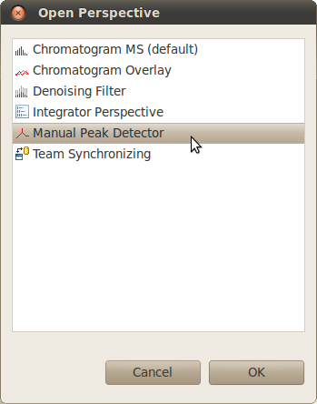
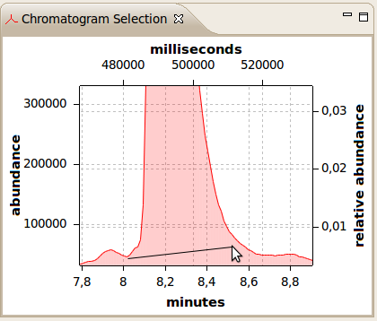
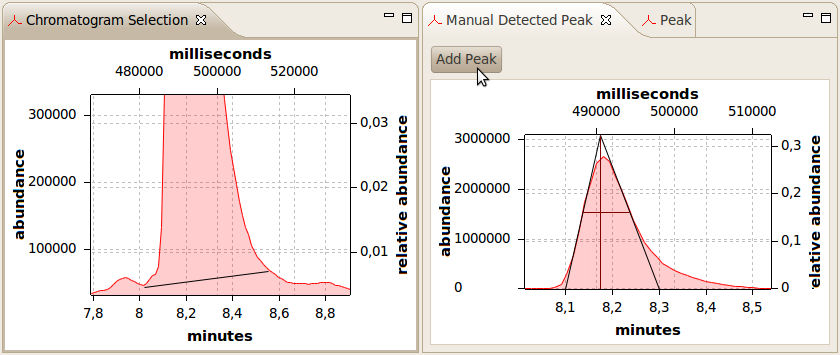

Manual Peak Detector
The peak detector can be used to selected peaks manually.
Select a chromatogram using the chromatogram file explorer and open the manual peak detector perspective.
Peak Detector Perspective:

Select a region in the chromatogram editor.
Afterwards, a peak can be selected in the "Chromatogram Selection" view.
Press the button "d" to enable the manual peak selection.
Manual Peak Selection (press button "d"):

The selected peak will be shown in the "Manual Detected Peak" view.
If you're sure to add the peak to the peak list, press the "Add Peak" button.
Otherwise, select another peak.
Manual Selected Peak:
